Écouter et voir
Vidéos
Toutes les vidéos de notre chaîne YouTube, à regarder ici. Utilisez le bouton de liste en haut à droite du lecteur pour choisir une vidéo.
Photos : VSVL, The Show (octobre 2026)
Le spectacle des 40 ans, les 10 et 11 octobre 2026 à l'Espace Gérard Philipe. Cliquez sur une photo pour l'agrandir.

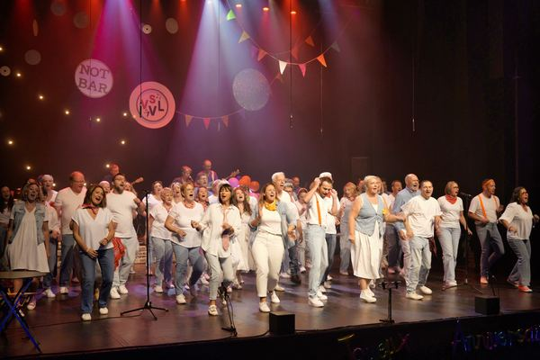

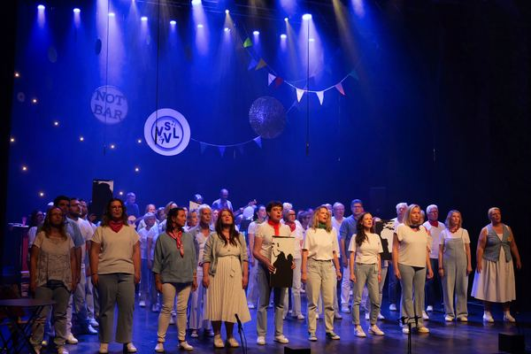

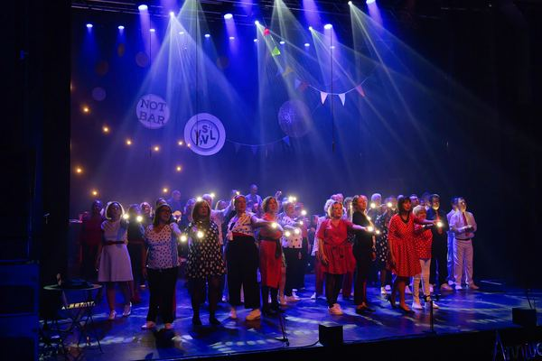

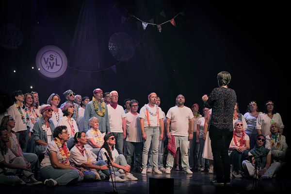

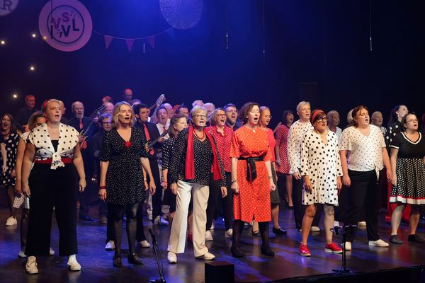

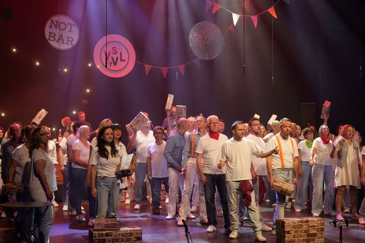

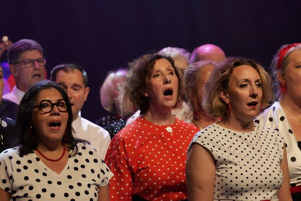

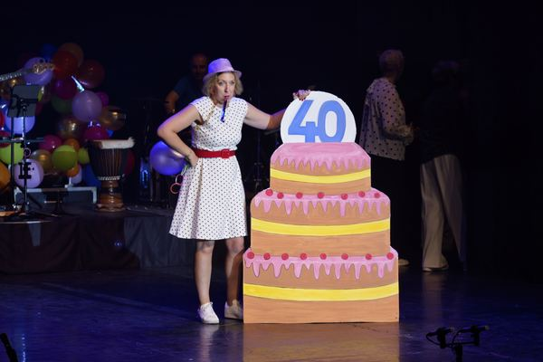

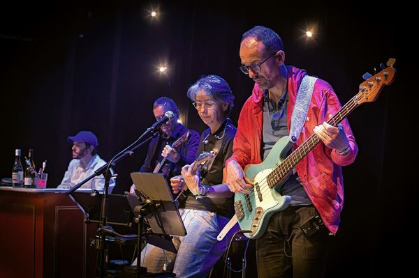

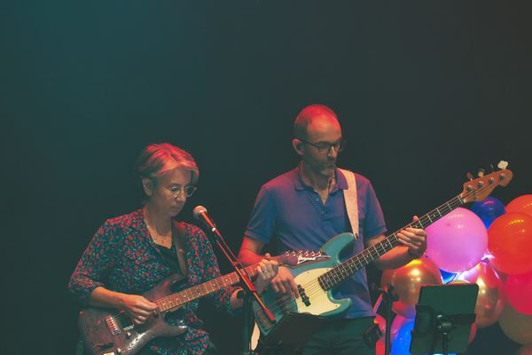

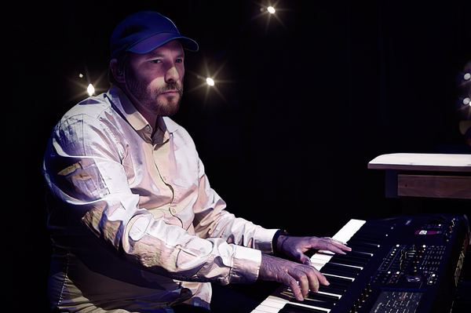

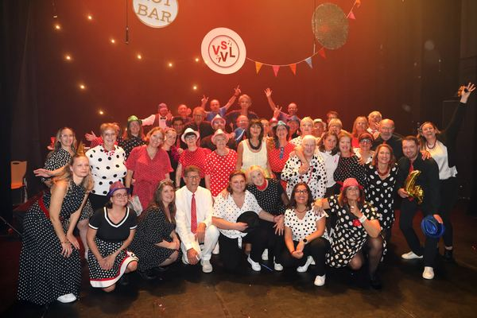